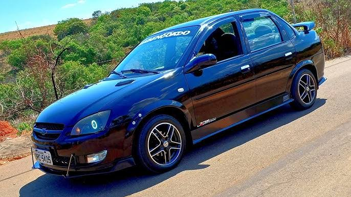
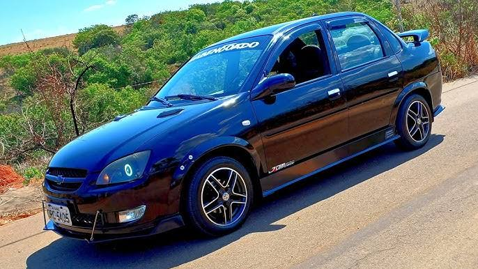
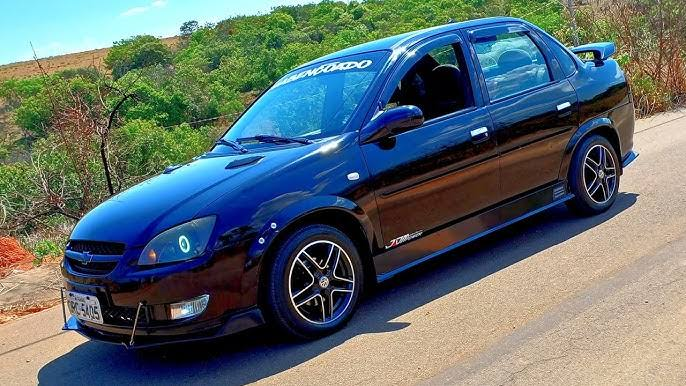
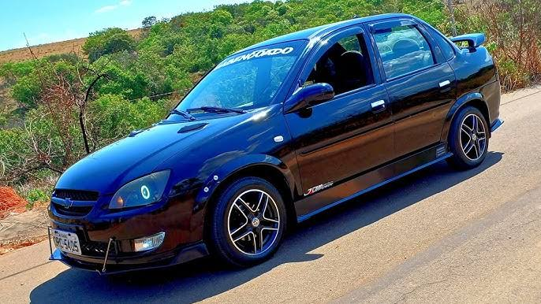

 

O Corsa Classic é um sedan compacto popular da Chevrolet, conhecido por sua mecânica robusta, confiabilidade e manutenção acessível, sendo um ícone no Brasil por sua durabilidade e bom custo-benefit, embora com foco em praticidade urbana, oferecendo um porta-malas razoável, economia de combustível e um motor 1.0 ou 1.6 confiável, mas com acabamento simples e sem muitos itens de conforto de carros mais modernos.
Foco: Carro popular de baixo custo de manutenção, ideal para uso diário e familiar, especialmente em cidades.
Motorização: Geralmente equipado com motores 1.0 ou 1.6 (VHC/VHC-E), com tecnologia Flex (álcool/gasolina), oferecendo bom desempenho para sua categoria, mas sem ser esportivo.
Dirigibilidade: Ágil no trânsito urbano, mas exige cautela em estradas, pois pode comprometer o consumo e a dirigibilidade em altas velocidades.
Design: Um sedan de quatro portas com visual simples, que se manteve por muitos anos, com versões que incluíam direção hidráulica, ar-condicionado e rodas de liga leve.
Porta-Malas: Capacidade de 390 litros, bom para um popular.
Pontos Fortes: Baixo custo de manutenção, alta durabilidade, facilidade de encontrar peças, bom consumo urbano.
Pontos Fracos: Acabamento interno básico, pouco isolamento acústico, falta de itens de tecnologia e conforto mais modernos (como multimídia).
Em resumo, o Corsa Classic é um "cavalo de batalha" confiável, com mecânica simples e peças baratas, que conquistou muitos brasileiros pela sua resistência e praticidade no dia a dia, sendo uma opção forte no mercado de usados.